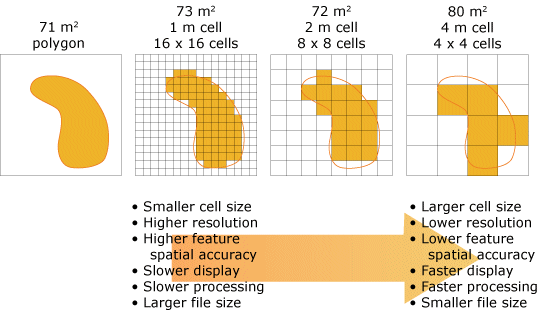

Geospatial
Visualization
Visualization
School of Architecture
Rethinking Image/Raster Data
- Colors and values : types of data
- Raster Bands : like channels in an image
> NDVI - Attribute tables : look up tables for integer rasters
- Resampling : resolution and cell size
- Raster math : combining multiple raster overlays
> algebra
> logic - Extraction : review
- Datum transformations : review
- some exercises
Colors and Values
Raster cells can contain
- Integers of varying sizes (8 bit to 32 bit)
- Floating point decimals (16 bit decimals)
- Double floating poiunt decimals (32 bit decimals)
- Remember
- 8 bits to a byte
- 1000 bytes to a kilobyte (kb)
- 1000 kb to a megabyte (MB)
- 1000 MB to a gigabyte (GB)
- 1000 GB to a terrabyte (TB)
Color is entirely a creation of the mind - visible color
Red Green Blue - RGB
- Additive color model based on ‘primary’ colors
- Used on all electronic display devices
- Primary colors are closely matched to three receptors in eye
- The modern computer uses numbers from 0-255 to represent each primary color
- 8 bits for each color, three colors, 24-bit true color
- Approximately 16,777,216 colors – more than we can see
Cyan Magenta Yellow Black - CMYK
- Subtractive color model based on printer colors
- Also known as "process" or "four-color" system
- All printing devices use this model
- More ink 'subtracts' lightness from the white paper
- 'K' is for 'key' as the black plate in an offset press is the 'key' plate
- 8-bit or 16-bit information in each color 'channel'
- CMYK image files are noticeably larger than RGB image files
- way more colors than we can see ...

Hexadecimal for the Internet
- The hex color system is based on the RGB model
- Used in HTML for the internet
- Is the preferred representation for color by programmers
- Hexadecimal is the name for counting in base 16
- Good for computers: 24 = 16
- 16 x 16 = 256 = 28 ~ byte of information
- Counted from 0-15 like this:
0 1 2 3 4 5 6 7 8 9 A B C D E F
- A hex color might look like this: #FF00FF
rgb(255,0,255)
Red: FF = 15*1 + 15*16 = 255
Green: 00 = 0*1 + 0*16 = 0
Blue: FF = 15*1 + 15*16 = 255
Photoshop's color picker

Approximate screen color
HEX
RGB
CMYK
Color Brewer
https://colorbrewer2.org
The original ColorBrewer (v1.0) was funded by the NSF Digital Government program during 2001-02, and was designed at the GeoVISTA Center at Penn State (National Science Foundation Grant No. 9983451, 9983459, 9983461).
The Team
Cynthia Brewer: Concept / Colors / Editor
Mark Harrower: Design / User Interface
Ben Sheesley: Design / User Interface
Andy Woodruff: Developer
David Heyman: Developer
Penn State University and Axis Maps
Brewer, Cynthia A., Geoffrey W. Hatchard and Mark A. Harrower, 2003, ColorBrewer in Print: A Catalog of Color Schemes for Maps, Cartography and Geographic Information Science 30(1): 5-32. https://doi.org/10.1559/152304003100010929
Raster Bands
- For RGB image, there are three bands: Red, Green, Blue
- Like channels in photoshop
- For all raster data can be:
- single band >> for example elevation as floats (DEM)
- three band "false color" >> estimated RGB values, satellite images
- multi-band >> bandwidths of sensing instruments
Landsat 8 Bands
| Band Number | Description | Wavelength | Resolution |
| Band 1 | Coastal / Aerosol | 0.433 to 0.453 µm | 30 meter |
| Band 2 | Visible blue | 0.450 to 0.515 µm | 30 meter |
| Band 3 | Visible green | 0.525 to 0.600 µm | 30 meter |
| Band 4 | Visible red | 0.630 to 0.680 µm | 30 meter |
| Band 5 | Near-infrared | 0.845 to 0.885 µm | 30 meter |
| Band 6 | Short wavelength infrared | 1.56 to 1.66 µm | 30 meter |
| Band 7 | Short wavelength infrared | 2.10 to 2.30 µm | 60 meter |
| Band 8 | Panchromatic | 0.50 to 0.68 µm | 15 meter |
| Band 9 | Cirrus | 1.36 to 1.39 µm | 30 meter |
| Band 10 | Long wavelength infrared | 10.3 to 11.3 µm | 100 meter |
| Band 11 | Long wavelength infrared | 11.5 to 12.5 µm | 100 meter |
Normalized Difference Vegetation Index (NDVI)

-1 < NDVI < 1
higher values indicate vegetation.

https://en.wikipedia.org/wiki/Normalized_difference_vegetation_index. Image courtest of NASA.
Attribute Tables for Raster Data
(Not Really)
(Not Really)
- Only in ArcGIS Pro and other ESRI products
- Only work on Integer rasters
- Actually look up tables for unique values
Resampling
Each cell or pixel in a raster dataset has an associate width and height in the coordinate system.
For projected coordinate systems this means we can calculate area based on width and height of a cell.
For projected coordinate systems this means we can calculate area based on width and height of a cell.
Resampling
Resample is similar to changing image resolution in Photoshop; the actual dimensions of the image do not change.
But when we resample the raster dataset, the dimensions of the cells change and the actual values in each cell are re-calculated (several different methods).
image from: https://gisgeography.com/raster-resampling/
Resampling Methods
- nearest neighbor
categorical data; fastest method - bi-linear interpolation
continuous data; elevation, temperature - cubic convolution
continuous noisy data; radar, surface models - majority interpolation
categorical data; land cover, districts - there are more ...
see https://gisgeography.com/raster-resampling/
image credit: Cell size of raster data. ArcMap 10.8 Documentation. https://desktop.arcgis.com/en/arcmap/latest/manage-data/raster-and-images/cell-size-of-raster-data.htm
image credit: Cell size of raster data. ArcMap 10.8 Documentation. https://desktop.arcgis.com/en/arcmap/latest/manage-data/raster-and-images/cell-size-of-raster-data.htm
Resampling Methods
You will see these methods as options when you:
- perform raster operations between two layers of different resolutions
- save a raster in a different format
- perform a coordinate system transformation
- clip a raster image (crop)
- purposefully resample to save disk or memory space
Rasterize Vector Layer and Resolution
You will also make resolution decisions when you rasterize a vector layer:

image credit: Cell size of raster data. ArcMap 10.8 Documentation. https://desktop.arcgis.com/en/arcmap/latest/manage-data/raster-and-images/cell-size-of-raster-data.htm
Raster Math and Raster Calculators
We can combine two or more raster data sets using basic math operations on coincidental cells or pixels.

image from: https://gisgeography.com/raster-resampling/
Raster Algebra Examples
- Temp year 1 - Temp Year 2 = Change in Temperature
- NDVI Year 1 - NDVI Year 2 = Change in Green Cover
- ( Temp year 1 + Temp Year 2 ) / 2 = Average Temperature
- ( NDVI Year 1 + NDVI Year 2 ) / 2 = Average Green Cover
- Only limited by your imagination (and available data)
Relational or Logical Raster Algebra
- Truth tests on raster cells
- TRUE = 1
- FALSE = 0
- Examples
- Elevation (DEM) < 5ft
- Temperature > 80 Fahrenheit
image from: https://gisgeography.com/raster-resampling/
Raster Zonal Statistics
Calculate statistics for cells in defined zones of a raster (count, sum, mean, min, max, etc).
NOTE: area can be calculated with cell dimensions and a count of cells.
images from (left to right): Wei Ying (2017). How to extract raster values at point locations? ArcGIS Blog. extraction from: https://www.esri.com/arcgis-blog/products/analytics/analytics/how-to-extract-raster-values-at-point-locations/ and GIS Geography (2022). How To Use Zonal Statistics [blog]. https://gisgeography.com/zonal-statistics/ and
Raster Zonal Statistics - Examples
- Calculate area of inundation scenario in a census tract - with an elevation layer count the number of pixels with an elevation of less than 5ft within each census tract.
- Summarizing Rain in a Watershed – By using a precipitation raster as your value field, you can set your zone as the watersheds with a sum function.
- Highest Elevation in Country – If you have an elevation raster dataset, you can run Zonal Statistics to find out its highest peak by using the maximum function.
- Adding Tree Cover in an Ecozone – To find the tree cover area in an ecozone, you can run Zonal Statistics to sum up a raster land cover dataset.
Examples from: GIS Geography (2022). How To Use Zonal Statistics [blog]. https://gisgeography.com/zonal-statistics/
Extraction of Values from Raster (review)
You can extract values from raster at defined points.
For example: elevation from a DEM based on a point layer.
image from: Wei Ying (2017). How to extract raster values at point locations? ArcGIS Blog. ESRI.
Extraction of Values from Raster (review)
Sometimes more efficient to extract values from multiple rasters in one operation.
For example: elevation from a DEM, temperature, rainfall, etc; all based on one point layer.

image from: Wei Ying (2017). How to extract raster values at point locations? ArcGIS Blog. ESRI.
Datum Shift Review

image used under fair use from: https://en.wikiversity.org/wiki/File:Texas_Capitaol_Dome_Position_Shifts.gif
{kind=link}
Datum Shift Review
NAD83 and WGS84
NAD83 and WGS84

image from: NEI GPS - an authorized Trimble dealer.
Flood Modeling in Little River Miami GIS Data & Tutorial
Raster Operations
Raster Operations
- From UM Libraries GIS workshops
https://miami.box.com/s/4ef3q2947cku6vrwameflxz4ohbnm326 - Download and unzip to a good location
- Open project with ArcGIS Pro
- Open word doc and follow instructions
Parrish (2021). Flood Modeling in the Little River Neighborhood of Miami [workshop]. University of Miami Libraries GIS Resources. https://miami.box.com/s/4ef3q2947cku6vrwameflxz4ohbnm326.
An exercise - UM Gables Campus 5ft Sealevel Rise Scenario
- Start new project in GIS of your choice
- Get data (from box folder)
- Create a data folder inside the project and unzip all data from above
5 ft scenario
- Open the DEM in your GIS project
- note projection information, size of cells, other important metadata
- make sure to understand that each cell is 5ft x 5ft or 25 sq/ft
- visualize using manual breaks: <0 | 0-5 | 5-10 | > 10
- choose a good color scheme
- explore a little
- Find raster calculator (in toolbox)
- create the expression: ("UM_DEM_2021_5FT.tif" > 0) & ("UM_DEM_2021_5FT.tif" < 5)
- give the output a good file name and run tool
- visualize based on 0 and 1
- make sure to understand that 0 is either elevation < 0 or elevation > 5
- make sure to understand that 1 is either elevation > 0 or elevation < 5
Calculate Zonal Statistics
- Open the Census Tracts in your project
- Remove fill color in symbology
- Look for "Zonal Statistics as Table" in toolbox
- Zonal layer be census tracts using GEOID20 as the field
- Second layer will be the raster with 0 < cell < 5 showing as 1
- Select all statistics, give the output a good name, and run the tool
- open the resulting table
- Calculate percentage flooded using field calculator (review)
- Open the field calculator and create a new column "percentFlooded"
- Create the expression: !SUM! / !COUNT! and run the tool
- Make sure to understand that you are calculating a percent area
Visualize Percentage Flooded
- Join statistics table back to census tracts using GEOID as the join field
- Visualize the percentage flooded on census tracts
- Using the info tool, click on the UM Census Tract and inspect results (find percentage flooded)